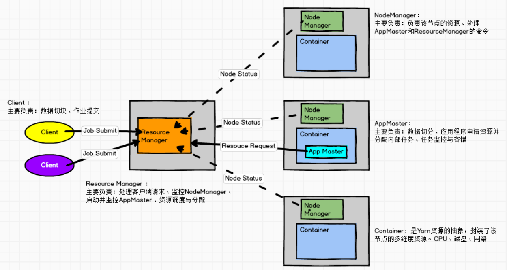
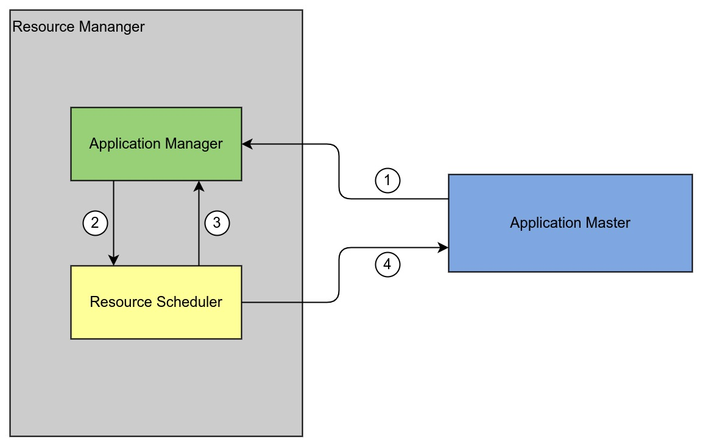
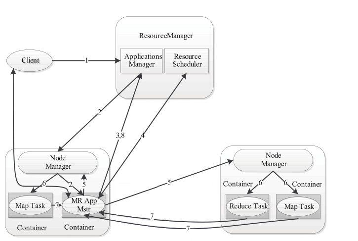

Ch04-Hadoop 之 Yarn
March 21, 2018
HDFS 读写过程需要 NameNode，DataNode，Client 等组件共同参与才能完成，所以 HDFS 的读写流程还是比较复杂的。
1. Yarn 基本架构 #

| 组件 | 功能 |
|---|---|
| Container | Yarn 资源（cpu，mem）的一种抽象，可以简单看做一台单独的“机器”。 |
| Resource Manager | 简称 RM，负责整个 yarn 的资源调度与分配；处理客户端的任务请求；启动或者监控 AppMaster。 |
| Node Manager | 简称 NM，负责管理单个节点的资源分配与执行；处理来自 Resource Mananger 的命令；处理来自 AppMaster 的命令。 |
| Application Master | 简称 AM，或 AppMaster，负责 MapReduce 任务相关资源的申请和内部任务分配，监控。 |
- 如果某个节点的 NodeManager/Container 损坏，AppMaster 也会重新向 ResourceManager 申请资源，ResourceManager 分配一个除当前损坏节点外的空闲节点。
- 若 AppMaster 所在的节点损坏，会导致整个 MapReduce 任务失败。
1.1 Resource Mananger #
Resource Mananger 是 Master 上一个独立运行的进程，负责集群统一的资源管理、调度、分配等，是一个全局的资源管理器。集群只有一个，它由应用程序管理器（Applications Manager，简称 ASM）和资源调度器（Resource Scheduler）组成。

易混点：
- Application Manager 缩写是 ASM，它是 Resource Mananger 里面的一个小模块
- Application Master 缩写是 AM 或者 AppMaster，它是由 Application Manager 管理的一个小模块
- 资源调度器（Resource Scheduler），根据各个应用程序的资源需求进行资源分配，以 Container 集成的方式返回给 AM，其中调度器 Scheduler 是一个“纯调度器”，它不从事任何与具体应用程序相关的工作，只做资源的调度。它是一个可插拔的组件，有三种常见的调度器可供使用，分别是
FIFO Scheduler，Capacity Scheduler和Fair Scheduler，可以通过 yarn-site.xml 配置。 - 应用程序管理器（Applications Manager），主要负责管理整个系统中所有 AM，RM 接收 job 的提交，其实是先提交给了 RM 的 ASM。它为应用分配第一个 Container 来启动运行 AM，这个 AM 是一个 pre-application ApplicationMaster，需要提前执行包括应用程序提交、与 调度器 Scheduler 协商资源以启动 AM、监控 AM 运行状态并在失败时重新启动它、监控 task 执行的进度等工作。
1.2 NodeMananger #
NM 是 Slave 上一个独立运行的进程，通过心跳机制上报节点的状态（磁盘，内存，CPU 等使用信息）给 RM，它是真正提供计算资源的，除了节点的状态还会上报节点上 Container 的使用信息。
1.3 AppMaster #
AM 是 Application 的监护人和管理者，负责监控，管理这个 Application 的所有 Attempt(task) 在集群中各个节点上的运行情况，同时负责向 RM 申请资源运行 task，task 执行完成后返还资源。AM 只有在集群运行 job 时，有任务在执行时，才会出现这个进程。
1.4 Container #
Container 是 YARN 中的资源抽象，它封装了某个节点上的多维度资源，如内存、CPU、磁盘、网络等。目前为止，YARN 仅支持 CPU 和内存两种资源，且使用了 Linux 中轻量级资源隔离机制 Cgroups 进行资源隔离。Container 是一个动态资源划分单位，是根据应用程序的需求动态生成的，默认是 1G 内存 +1 核 CPU。 当 AM 向 RM 申请资源时，AM 向 RM 询问 AM 有哪些 Container 可以用，向 NM 请求分配具体的 Container。
2. Yarn 提交流程 #

- 用户向 YARN 中提交应用程序，其中包括 AppMaster 程序、启动 AppMaster 的命令、用户程序等。
- ResourceManager 为该应用程序分配第一个 Container，并与对应的 NodeManager 通信，要求它在这个 Container 中启动应用程序的 AppMaster。
- AppMaster 首先向 ResourceManager 注册，这样用户可以直接通过 ResourceManage 查看应用程序的运行状态，然后它将为各个任务申请资源，并监控它的运行状态，直到运行结束，即重复步骤 4~7。
- AppMaster 采用轮询的方式通过 RPC 协议向 ResourceManager 申请和领取资源。
- 一旦 AppMaster 申请到资源后，便与对应的 NodeManager 通信，要求它启动任务。
- NodeManager 为任务设置好运行环境 (包括环境变量、JAR 包、二进制程序等) 后，将任务启动命令写到一个脚本中，并通过运行该脚本启动任务。
- 各个任务通过某个 RPC 协议向 AppMaster 汇报自己的状态和进度，以让 AppMaster 随时掌握各个任务的运行状态，从而可以在任务失败时重新启动任务。在应用程序运行过程中，用户可随时通过 RPC 向 AppMaster 查询应用程序的当前运行状态。
- 应用程序运行完成后，AppMaster 向 ResourceManager 注销并关闭自己。